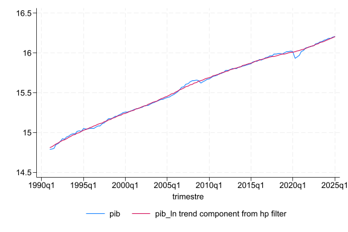
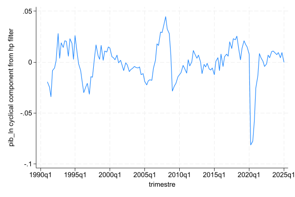
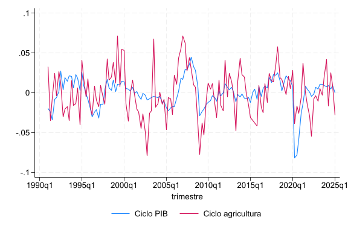
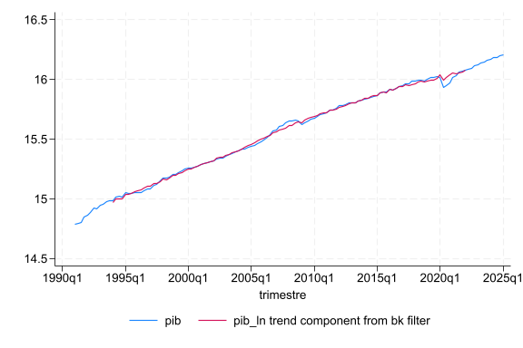
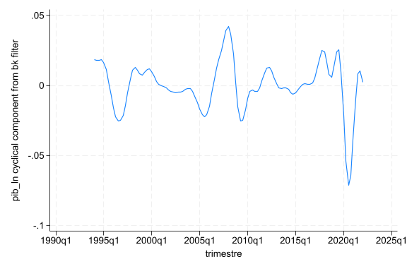
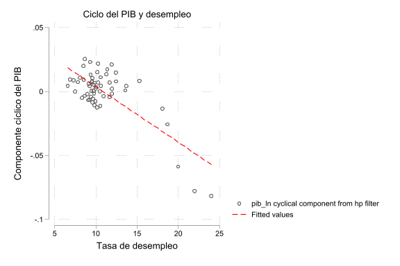

Series de tiempo - II
En el laboratorio anterior vimos cómo declarar una serie de tiempo con tsset, graficarla con tsline y suavizarla usando promedios móviles. En este laboratorio vamos a ver dos formas adicionales -y más formales- de separar una serie en tendencia y ciclo: el filtro de Hodrick-Prescott y el filtro de Baxter-King. Además, vamos a ver cómo calcular y graficar la correlación entre dos series.
Puede descargar el dofile aquí
Filtro Hodrick-Prescott
En el laboratorio pasado vimos que una forma de estimar la tendencia de una serie es mediante promedios móviles (simples o ponderados).
Filtro Hodrick-Prescott
El filtro de Hodrick-Prescott (HP) es otra forma de descomponer una serie de tiempo, en este caso en dos componentes:
- Tendencia: el comportamiento de largo plazo de la serie
- Componente cíclico: las fluctuaciones de la serie alrededor de su tendencia
Es un método muy utilizado en macroeconomía para identificar el ciclo económico, aunque también ha recibido críticas por la forma en la que calcula la tendencia.
Sintaxis
Donde:
| Argumento | Significado |
|---|---|
nueva_variable |
Nombre con el que se guarda el componente cíclico |
variable_original |
Variable a la que se le aplica el filtro |
smooth(#) |
Parámetro de suavizado del filtro |
trend(nueva_variable_2) |
Nombre con el que se guarda la tendencia |
¿Qué valor usar en smooth()?
El parámetro smooth() depende de la frecuencia de los datos. Algunos valores usados comúnmente en la literatura son:
- Datos anuales: 100
- Datos trimestrales: 1600
- Datos mensuales: 14400
En nuestro caso, como vamos a trabajar con datos trimestrales, usamos smooth(1600).
Importante
Al igual que con los comandos vistos en el laboratorio anterior (tsline, L., D.), es necesario declarar la serie de tiempo con tsset antes de poder usar tsfilter.
Ejemplo - PIB trimestral
Vamos a aplicar el filtro de Hodrick-Prescott a la serie del PIB trimestral de Costa Rica que trabajamos en el laboratorio anterior.
Serie desestacionalizada
Note que la base se llama desestacionalizado.dta. Esto es porque los filtros de tendencia y ciclo asumen que ya se eliminó el componente estacional de la serie.
Si aplicáramos el filtro directamente sobre una serie con estacionalidad (por ejemplo pib_real.dta), el componente estacional se mezclaría con el componente cíclico y la descomposición ya no sería tan clara.
Como la variable de tiempo que trae la base no quedó en el formato correcto, la volvemos a generar y declaramos la serie:
drop trimestre
gen trimestre = tq(1991q1) + _n - 1
tsset trimestre, quarterly
Ahora sí podemos aplicar el filtro sobre la variable pib:
tsfilter hp ciclos_pib_hp = pib, smooth(1600) trend(tendencia_pib_hp)
Esto crea dos variables nuevas:
tendencia_pib_hp: la tendencia de largo plazo del PIBciclos_pib_hp: el componente cíclico del PIB
Podemos graficar la serie original junto con su tendencia:

Y por separado podemos observar el componente cíclico:

Interpretación
Cuando el componente cíclico es positivo, el PIB está por encima de su tendencia de largo plazo (la economía está en auge). Cuando es negativo, el PIB está por debajo de su tendencia (la economía está en un periodo de desaceleración).
Comparar el ciclo entre sectores
Una de las ventajas de obtener el componente cíclico es que podemos comparar qué tan sensible es un sector económico específico al ciclo del PIB total.
Por ejemplo, podemos aplicar el mismo filtro a la variable agricultura y comparar su ciclo con el del PIB:
tsfilter hp ciclos_agr_hp = agricultura, smooth(1600) trend(agricultura_trend)

Interpretación
Si el ciclo de un sector se mueve de forma muy parecida al ciclo del PIB, decimos que es un sector procíclico. Si se mueve en sentido contrario, decimos que es contracíclico. Si casi no se relaciona con el ciclo del PIB, decimos que es acíclico.
Filtro Baxter-King
Filtro Baxter-King
El filtro de Baxter-King (BK) es una alternativa al filtro de Hodrick-Prescott para obtener el componente cíclico de una serie. A diferencia del filtro HP, el filtro BK es un filtro de paso de banda: elimina tanto las fluctuaciones de muy corto plazo (ruido) como las de muy largo plazo (tendencia), dejando únicamente las fluctuaciones asociadas al ciclo económico.
Sintaxis
Note que la sintaxis es muy similar a la del filtro HP, solo que el filtro BK no necesita la opción smooth().
Aplicándolo a nuestra serie del PIB:


HP vs BK
Ambos filtros buscan lo mismo (separar tendencia y ciclo), pero lo hacen de forma distinta, por lo que es normal que el componente cíclico no sea idéntico entre ambos métodos. Puede comparar ciclos_pib_hp y ciclos_pib_bk con tsline para ver las diferencias.
Correlación
Otra pregunta común en el análisis de series de tiempo es si dos variables se mueven juntas. Por ejemplo, ¿el ciclo económico está relacionado con el desempleo?
Para esto usamos el coeficiente de correlación de Pearson, el cual nos indica el grado de asociación lineal entre dos variables, con valores entre -1 y 1.
Interpretación del coeficiente
- Cercano a 1: asociación lineal positiva fuerte
- Cercano a -1: asociación lineal negativa fuerte
- Cercano a 0: poca o ninguna asociación lineal
En Stata existen dos comandos para calcular este coeficiente:
Ejemplo
Podemos ver si existe relación entre el componente cíclico del PIB y la tasa de desempleo:
Resultado esperado
Se espera obtener un coeficiente negativo, ya que cuando la economía crece por encima de su tendencia (ciclo positivo) generalmente el desempleo tiende a disminuir, y viceversa.
Graficar correlaciones
Una forma muy común de ilustrar una correlación es con un gráfico de dispersión (scatter). Para complementarlo, podemos agregar una línea de mejor ajuste usando lfit dentro de un gráfico twoway.
Ejemplo
graph twoway (scatter ciclos_pib_hp desempleo) ///
(lfit ciclos_pib_hp desempleo, color(red)), ///
scheme(plotplain) ///
title("Ciclo del PIB y desempleo") ///
ytitle("Componente cíclico del PIB") ///
xtitle("Tasa de desempleo")

La línea roja (lfit) nos muestra la pendiente de la relación lineal entre ambas variables, lo que facilita observar visualmente si la relación es positiva, negativa o prácticamente plana.
Resumen de comandos
| Comando | Función |
|---|---|
tsfilter hp |
Descompone una serie en tendencia y ciclo (filtro Hodrick-Prescott) |
tsfilter bk |
Descompone una serie en tendencia y ciclo (filtro Baxter-King) |
correlate |
Calcula correlación de Pearson (excluye observación si falta algún dato) |
twoway (scatter...) (lfit...) |
Gráfico de dispersión con línea de mejor ajuste |
Ejercicio
Usando la base de datos del PIB trimestral:
- Aplique el filtro de Hodrick-Prescott a la variable de desempleo y obtenga su componente cíclico.
- Calcule la correlación entre el componente cíclico del desempleo y el componente cíclico del PIB (
ciclos_pib_hp). - Grafique la relación entre ambas variables usando
scatterylfit. - Compare el componente cíclico del PIB con el del sector construcción ¿Qué tipo de relación existe, acíclica, contra-cíclica o pro-cíclica?